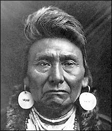

|
|
|
| In the northwestern area of the U.S. which is now
Oregon, Washington, and Idaho there was a great chief. This chief over
time won the respect of many whites on the East coast. He led many
other Indians towards freedom in Canada 1,400 miles away. On their
way they had to fight and avoid the army. This great chief was Chief
Joseph of the Nez Perce.
|
|
| Joseph was born in 1840 in Wallowa Valley in present
day Oregon. His real name was not Joseph. Joseph was his Christian
name. His real name was Hin-mah-too-yah-lat-kekt, which means Thunder
Rolling down from the Mountains. Joseph had a younger brother only
a couple years younger than him. His brothers name was Ollokot.
Joseph and Ollokot spent much of their childhood on a Christian missionary.
The Nez Perce was a friendly tribe and made their first contact with whites
in 1805 with Lewis and Clark. The Nez Perce didn’t mind the whites
as long as there was peace between them.Joseph eventually died at Collville
Reservation, in the Northeastern part of Washington, on September 21, 1904
from a broken heart. However he didn’t die until after long hard fight.
|
|
| Old Joseph, Chief Joseph’s Father, signed a treaty
with the United States saying that they can keep their traditional homeland.
That land included Oregon, Washington, and Idaho. In 1863 near Clearwater
gold was discovered. The whites started to move into the Nez Perce’s
homeland. So the government made another treaty reducing the Nez Perce’s
homeland. Old Joseph refused to sign the treaty. In 1871 Old
Joseph died. In that same year Joseph the Younger got voted into being
chief.
|
|
| Chief Joseph thought that since Old Joseph didn’t sign the treaty that he wasn’t bound to it. In 1863 the government then started to remove the whites but after a few years the government reversed itself. General Howard then threatened a cavalry attack. Scared for his people Chief Joseph, Looking Glass, Eagle From the Light, White Bird, and Toohoolzote moved their bands towards the Lapwai Reservation. These 5 chiefs were known as the “non-treaty” chiefs because they wouldn’t sign any treaties. After a while Chief Joseph became the non-treaty chiefs spokesperson. The 5 bands consisted of about 700 men, women, and children. One of Joseph’s speeches about the whites was: “All men were made by the same Great Spirit. They are all brothers. The earth is the mother of all people, and all people should have equal rights upon it.” Since Chief Joseph didn't want to go to war with the army he tried to persuade the other chiefs not to go to war . Eventually he succeeded. | Chief
 Joseph |
| Joseph persuaded the other chiefs not to go to war,
but after some of White Bird’s warriors attacked and killed some whites he
joined them. On June 17, 1877 the battle of White Bird Canyon took
place. There were 100 cavalrymen from Fort Lapwai facing 200 Nez Perce
warriors. One officer and thirty-three enlisted men were slain.
After that battle the chase began.
|
|
| The Nez Perce led the U.S. Army on a 1,400-mile chase
only to be caught 40 miles from the Canadian border. General Sherman
later was very impressed with the Nez Perce’s retreat. General Howard
mobilized 500 men after the Nez Perce. On July 11, 1877 Howard met
up with them near South Forkin, Idaho. Howard charged the Nez Perce
camp and would have ended the chase if he would of followed through with
the victory. The battle lasted two days. It lasted this long
because the Nez Perce fought with un-Indian like skills. Later this
battle was known as the Battle of Clearwater. As the battles went on
Joseph stayed behind at camp to guard the women and children while Ollokot
led the warriors. Eventually the Nez Perce proved to be the better
fighters and the better marksman.
|
|
| On August 9, 1877 Colonel John Gibbon charged the
camp killing women and children, but the Nez Perce fought back making the
army retreat. Later a council of chiefs made the decision to cross
the Bitterroot Mountains to seek aid from the Crow or Sitting Bull and the
Sioux in Canada. However they never got that far. General Howard
sent orders to Colonel Nelson Miles to intercept the Nez Perce. On
October 5, 1877 Colonel Miles met them.
|
|
| On that same day Chief Joseph surrendered. For
Chief Joseph’s surrender speech he said this, “I am tired of fighting.
Our chiefs are dead. Looking Glass is dead. Toohoolzote is dead.
The old men are dead. It is young men who say ‘Yes’ or ‘No’.
Ollokot is dead. It is cold and we have no blankets. The little
children are freezing to death. My people, some of them, have run away
to the hills and have no blankets, no food. No one knows where they
are…perhaps freezing to death. I want to have time to look for my children
and see how many I can find. Maybe I shall find them among the dead.
Hear me, my chiefs. I am tired, my heart is sick and sad. From
where the sun now stands, I will fight no more forever.” Chief Joseph
said this on October 5, 1877 at Bear Paw Mountain.
|
|
| After surrendering the army marched the Nez Perce
to Indian Territory, which is present day Oklahoma. Chief Joseph had
many trips to Washington D.C. trying to get the president to allow them to
return to their homeland. The president did allow them to return to
the Northwest, however 118 Nez Perce Indians were sent to the Lapwai Reservation.
The rest, along with Chief Joseph, were sent to the Collville Reservation.
Joseph died here on September 21, 1904 from a broken heart.
|
|
| Jacob Wulfkuhle Rossville Jr. High 2002 Plains Project Bibliography |